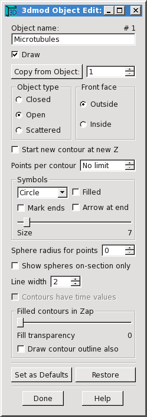
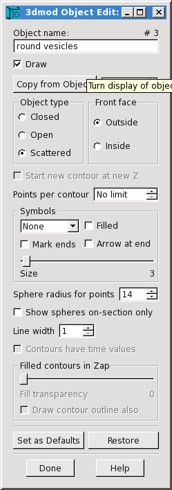
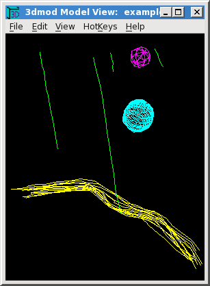
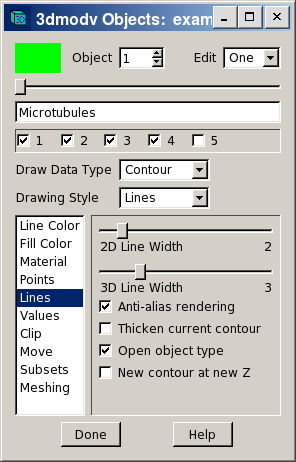
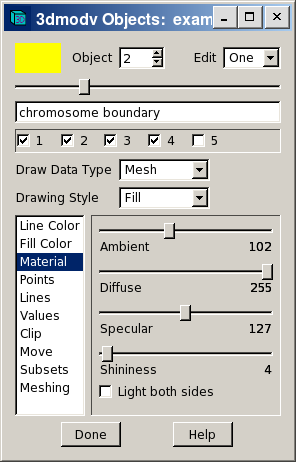

|
Model header: includes pixel size, Z-scale, and information relating model to image coordinates. |
||||||||||||||
|
|
|
||||||||||||
To create a model for a MRC image file called
example.mrc run the following 3dmod command.
This command will cause a new model to be created, ready to edit.
3dmod example.mrc
If a model has already been saved but needs further editing run the
command
3dmod example.mrc example.mod
When this command is run a window similar to the one below will open up. A secondary window containing the image of the image file and model file is opened after the data has been loaded.
The title bar of the Info Window shows the name of the image file and also contains controls for minimizing the window or closing it, which is a quick way to exit the program. Below the menu line are some buttons that control window behavior, with the name of the current model file shown on the right. The peg button allows you to keep the Info Window on top of windows from all other programs. The raise button (two up arrows) will bring all of the windows of the current 3dmod above windows from other programs. The "Show point" button will be explained in a moment.
Below these buttons are a set of controls called spin boxes, which are now used extensively in 3dmod. A spin box shows a current value of some parameter, and lets you change that parameter either by increasing or decreasing it with the up and down arrow buttons, or by typing in a new value. The three spin boxes on the left show the current model object, contour and point, as well as the color of the current object. The model being edited above has 4 objects; the 4th object is currently selected. The 4th object has 11 contours and the 5th contour is currently selected. This contour has 20 points and the 10th point is the current point.
Generally, when you change object, contour, or point with one of these spin boxes, the program will show the new current point in the image windows and change the section being displayed if necessary. Sometimes you will not want this to happen, such as when you want to switch between objects without having the displayed section change. In that case, just turn off the "Show point" checkbox.
The three spin boxes on the right are the image position controls. They show that the image dimensions are 572 by 378 and that there are 78 sections. The current image point is at the location (237,259) with the origin at the lower left corner of the image. The current section is number 16. If you change the Z value, a different section will be shown in image windows. You can change X and Y values to move the current image point. The current image point is not the same as the current model point. It is marked by a cross when the program is not in model mode, and it determines what coordinates are displayed in some of the image windows.
At the bottom of the Info Window are the Black and White sliders, which you can use to adjust the contrast and brightness of the displayed image. Pixel values between the selected black and white levels (147 and 234) are stretched out to occupy the full dynamic range of the display. Moving the sliders toward each other will increase contrast, while moving one or both to the left will increase brightness.
These sliders have features common to nearly all of the slider controls in 3dmod. Clicking to one side of the handle with the left mouse button will change the value by one. Clicking with the middle mouse button will jump the slider to the position of the mouse pointer. Dragging the handle by clicking and holding the left mouse button will cause the image contrast to be continuously updated until you release the button. In other words, these sliders are continuously active, or "hot". Sometimes the program will not perform well when a slider is continuously active, such as with very large images or models. You can keep a slider from being hot by holding down the Ctrl key (Apple key on the Macintosh). When you do this, the numeric value will be continuously displayed but the image will not be updated until you release the slider.
Below the sliders are several controls related to setting the contrast.
The "Movie" and "Model" radio buttons allow a user to select one of the two modes. When "Movie" is selected, pressing the middle or right mouse button will cause the image to movie back and forth. When "Model" is selected, the three different mouse buttons will edit the model, as described below.
The bottom panel of the Info Window contains additional information and status messages. You can expand the window vertically to see more of the information at once.

|

|
This display of two nearby slices from a tomogram (sections 12 and 16) illustrates the three kinds of model objects: closed contours, open contours, and scattered points.
The Object Edit Dialog
The type of contours in an object, and the symbols displayed at
individual points, can be selected with the Object Edit dialog box.
Here are two examples.
| 
|

|
Modeling in the Zap Window
Model points are added or changed using a 3-button mouse with the
program in Model mode.
The table below gives an overview of the mouse controls in Movie and
Model mode.
| Mouse Button | Movie Mode | Model Mode | ||||
|---|---|---|---|---|---|---|
| Left | Select position or drag mouse to pan image. | Attach to nearby model point or drag mouse to pan image. | ||||
| Middle | Movie image forward, or stop movie. | Add new model point or drag mouse to add several points. | ||||
| Right | Movie image backward, or stop movie. | Modify the current model point or drag mouse to modify several points. | ||||
When you first start a new model or a new object in a model, your first model point will be added to an empty contour. There are two basic ways to add model points to a contour. You can click the middle mouse button to add each individual point after moving to a desired position. The other way is to hold down the middle button while dragging the pointer over a desired path, which will add closely spaced points along the path.
Once you have finished a contour and want to start another one, you need to create a new contour. This can be done with the menu entry Edit-Contour-New, but is much more conveniently done by pressing "n", which is one of many hot keys available to assist modeling. If you are modeling with closed contours, a new contour is created automatically when you switch to a new section and press the middle mouse button.
As you model, the last point added is left as the current model point. You can change the current model point by clicking with the left mouse button near a point in any contour that is present on the section. This is one way to change the contour or object being modeled. If you click with the left button at a position that is far from any model points, the current point and contour become undefined. If you then add a model point, it will be placed in a new contour, so this is yet another way to begin a new contour.
The right mouse button is used to modify existing points by either moving or deleting them. Use this button alone to move one or more points; hold down the Ctrl key to delete points under the cursor while clicking or holding down the right button.

The toolbar for the Zap window has a number of useful controls.
3dmod has many hot keys, which are listed both in the man page for 3dmod and in a help window that can be accessed from the Help-Hot Keys menu entry. These hot keys will work from all of the 3dmod image display windows, and even from the Info Window or other dialog boxes. There are also hot keys active only in particular windows, which are described in the help for those windows. The most commonly used hot keys are listed here:
PageUp Show the next section (increase Z) PageDown Show the previous section (decrease Z) Home Show the last section End Show the first section Delete Delete current model point - Zoom down = Zoom up s Save the model n Start a new contour Ctrl-S Snapshot an image window to a Tiff file t Toggle model drawing off or on , Slow down movie or model rotation . Speed up movie or model rotation

The XYZ Window shows not just the XY plane but also the two orthogonal planes, YZ and XZ. It allows you to movie through the volume in any of these planes independently, and also displays the intersection of the model with each of the three planes. In the example, the XY plane is in the lower left, the XZ plane is above it, and the YZ plane is to the right. The current image point governs which planes are displayed; its position is marked by a small yellow cross in each image panel. You can see the large modeled vesicle in the XZ (top) plane, and an oblique slice through the microtubule marked by the small yellow cross in the YZ (right) plane.
The colored marker lines in the margins of the images also indicate the current point coordinates. They contain small handles that can be grabbed with the mouse to riffle through the images in one plane. The color of the marker line matches the color of the border around the image that is controlled by it; for example, the red line controls the plane selected in the upper panel.
The display of the model in the XY plane is essentially the same as in the Zap window. In the other planes, scattered points will show up as circles, and other segments of contours will appear to the extent that they intersect the plane.
The XYZ Window can be zoomed with the "-" and "=" hot keys and panned with the mouse. In Movie mode, the mouse buttons behave the same as in the Zap Window, and they act separately in the three image panels for selecting the current image point or starting a movie in that panel. Basic modeling can also be done in the XY plane, again with the same mouse button functions as in the Zap window.
The Slicer Window provides a much more flexible view of structures than the XYZ Window because it can display a slice at an arbitrary orientation through the image volume. The orientation is set by adjusting the X, Y, and Z rotation sliders in the second toolbar. In the example, one of the oblique microtubules was centered in the window, then the Z rotation was adjusted slightly to orient the microtubule vertically, then the X rotation was adjusted to bring the microtubule into longitudinal section. Small changes in the X and Y sliders usually cause big changes in the image appearance, whereas the Z slider will primarily rotate the image clockwise and counterclockwise unless X or Y angles are large.
The center of the displayed slice is the current image point and is marked by a red cross. This center point may be moved either by changing the current image point in some other window, or by clicking on the image in this Slicer Window with any mouse button.
The most useful items in the slicer toolbars are the following.
It is possible to model in the Slicer, again with the same mouse button functions as in the Zap window. This provides a convenient way to track trajectories on 3D. If the lock button is not on, every mouse click will bring the selected point to the center. Sometimes this behavior is desirable, sometimes not. If not, just lock the slicer for modeling.
The power of the Slicer comes at a cost - it is the first window that we have seen where the computation time can easily make the display unacceptably slow. Display time depends on three factors: image thickness, high versus low resolution, and image size. If you need to average through many slices with a high resolution display, be sure to make the image as small as possible. If you must work with a very slow slicer window, remember that the hot sliders can be tamed with the Ctrl key.
Setting Z-scale and Pixel Size
The Z-Scale is the ratio of the thickness between successive images to the pixel size. Its two most common uses are to adjust for section thickness in serial section reconstructions and section thinning in tomography. For serial sections, divide the section thickness in nanometers by the pixel size at which the data were digitized, again in nanometers. For tomograms, divide the original thickness at which the section was cut on the microtome (in nanometers) by the actual thickness of material in the tomogram (pixels of material times pixel size in nanometers).
The Pixel Size field should contain both a value for the size of the pixel in the digitized data, and the units for that value. Units can be one of the following; A, nm, um, mm, m, km. For example, you could enter "0.015 um" or "15 nm".
| 
|

|

|
These are different views of the example model in the Model View
Window, which can be opened while running 3dmod by selecting Model
View from the Image menu, or by typing the hot key "v".
This same window can be opened in
a standalone mode with
3dmodv example.mod
The model has been
tilted around the X and Y axes using the arrow keys on the keypad.
The model can also be rotated with the middle mouse button, or using
arrows and text boxes in the
Control dialog box that can be opened using the Edit-Controls menu
entry, but the arrow keys are often more convenient. A single keystrike
rotates the model by one step. Continuous rotation is started by
pressing the keypad Enter key followed by the desired arrow key;
another press of the Enter key stops the rotation.
On the left is the initial view of the model, before any of the default viewing parameters have been changed. These parameters are initially set to show open and closed contour objects with contour line tracings, and scattered points as wire baskets. The middle view shows two changes that can be made immediately, without having to compute surface meshes for the contours. The microtubule lines (green) have been made thicker and the scattered points are displayed as lighted surfaces. On the right is the display after making a meshes for the objects (as explained below) and setting all objects to display as lighted surfaces. These display settings are all changed in the 3dmodv Objects dialog box, opened with the Edit-Objects menu item or the O hot key.
| 
|

|

|
The Objects dialog box contains controls for selecting the current object to be edited, buttons for turning individual objects on or off, and a set of panels for setting different object properties or controlling the overall display. A panel is selected by clicking on its name in the list.
The example on the left shows how the appearance of the green lines was changed for the middle model view panel above. The "Lines" panel was selected, the line width was increased from 1 to 3, and "Anti-alias rendering" was turned on to smooth out the jagged edges of the lines.
The example in the middle shows how the scattered points were displayed as solid objects. The selection for "Draw Data Type" was changed from "Contour" to "Mesh". 3dmod automatically changed "Drawing Style" from "Line" to "Fill" to produce the most commonly desired appearance.
The example on the right shows a change that was required after meshes were computed and displayed for all objects. By default, objects are lit only on one surface, which is always the outer surface for closed contour objects. (Note the dark surfaces on the interior of the microtubules.) However, a sheet like the chromosome boundary (yellow) does not have an obvious interior surface, and its lit surface happened to face downward, toward the chromosome. This problem was solved by checking the "Light Both Sides" option in the "Material" panel. The other method of solving this is to go back to the 3dmod Object Edit dialog box and change the "Front Face" from "Outside" to "Inside", then recompute the mesh.
The appearance of the magenta scattered point was improved between the middle and right views of the model by pressing the "g" hot key twice to increase sphere drawing quality. When there are many spheres, this degree of quality could significantly increase drawing time for the display, so it is not the default. The sphere drawing quality can also be controlled in the "Points" panel, which allows one to change the global quality setting (just as with the "G" and "G" hot keys) as well as set a quality for individual objects.
Putting a skin on model data
To skin the example model, this command was used:
imodmesh -C -t 1 -d 10 example.mod
By default, imodmesh will construct meshes only between pairs of contours, which will leave holes at the top and the bottom of a closed contour object because there is nothing to connect the highest and lowest contours to. The "-C" option tells imodmesh to fill in these holes or "Cap" them off.
In the model view on the right, the lines of the microtubules appear as tubes because imodmesh created cylindical meshes around them. It did this because of the "-t" option, which is followed by a list of open contour object numbers that should be given tubular meshes (here, just object 1). The "-d" option is then used to specify the diameter of the tubes, in pixels (10).
It is easy to lose your meshed model if you are modeling in 3dmod, save the model, run imodmesh, look at the meshed model with 3dmodv, then continue modeling in 3dmod and save the unmeshed model again. There are two ways to avoid this problem. You can exit from 3dmod before you run imodmesh, so that you will be working with the meshed model when you start 3dmod again. Or, after running imodmesh, be sure to read the meshed model back into 3dmod with the Open Model entry in the File menu.
Sometimes the mesh data structure can get so large that interactive
viewing is very slow. There are two ways to make a mesh with a lower
resolution, the "-R" option to skip points within contours and
the and "-i" option to skip Z levels. With "-R", imodmesh will skip
points that are within a certain distance of the line
segments between the remaining points, thus preserving the shape of
curves. For example,
imodmesh -C -o 4 -R 0.75 -i 2 example.mod
Here, a new mesh is created only for object 4 (-o 4), and
points will
be skipped, but the surface defined by the mesh will always be within 0.75
pixel of the original data (-R 0.75). In addition, the "-i 2" makes
imodmesh connect every other Z plane (i.e., at intervals of 2 in Z),
reducing the mesh size by 2.
Each time you run imodmesh, the existing file is saved as a backup file with a "~" added to its name. You can also erase all of the mesh data from your model using the "-e" option to imodmesh.
Imodmesh also has an option (-l) to store a low resolution mesh alongside a regular mesh, so that a big model can be manipulated rapidly in low-resolution mode then switched to high-resolution mode for studying details. Other commonly needed options are -s and -P to connect contours across gaps; see the imodmesh man page for details.
Advanced topics